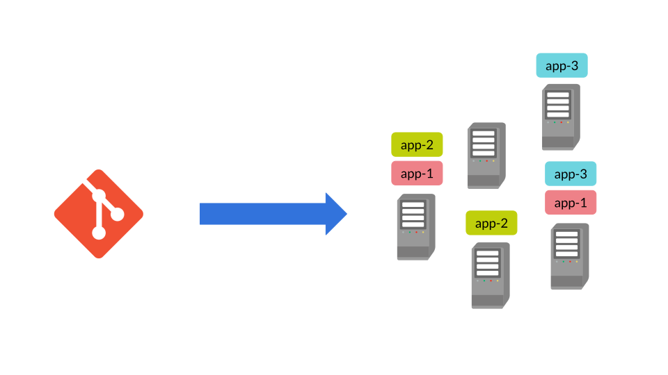
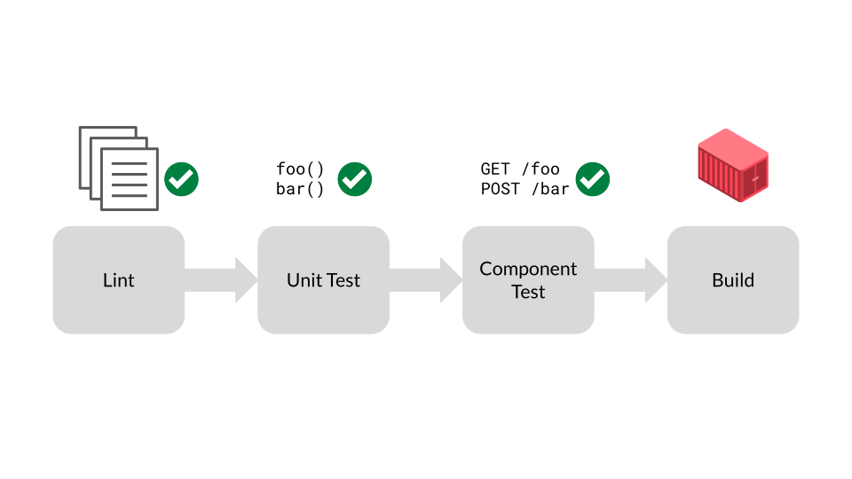
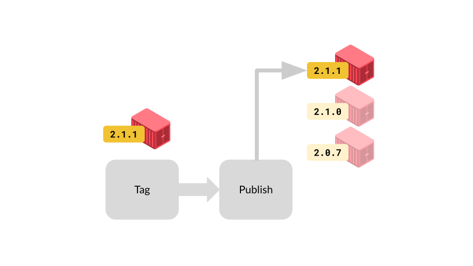
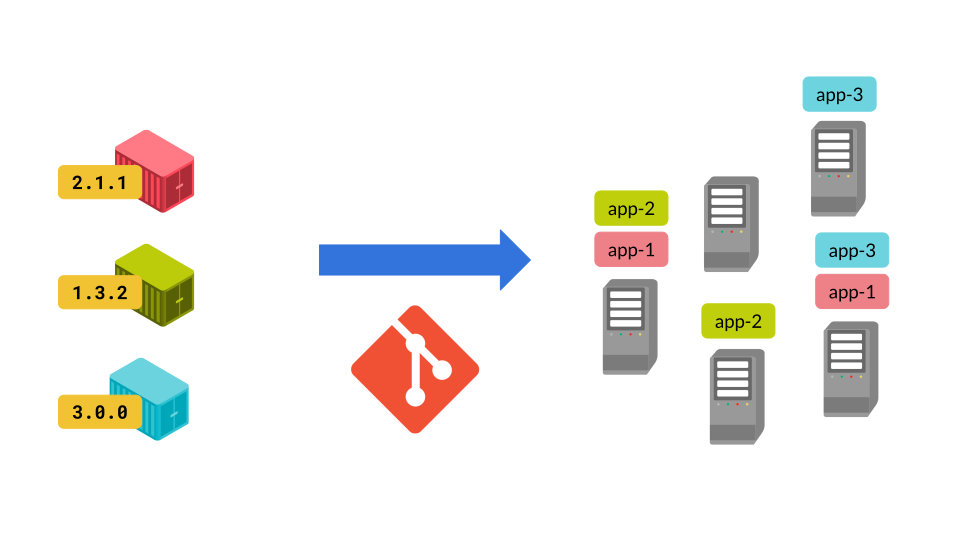
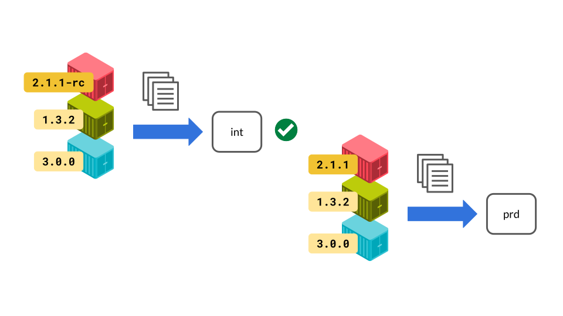
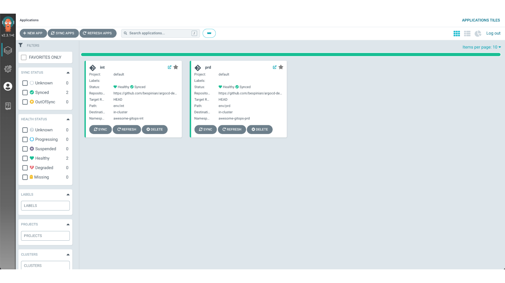
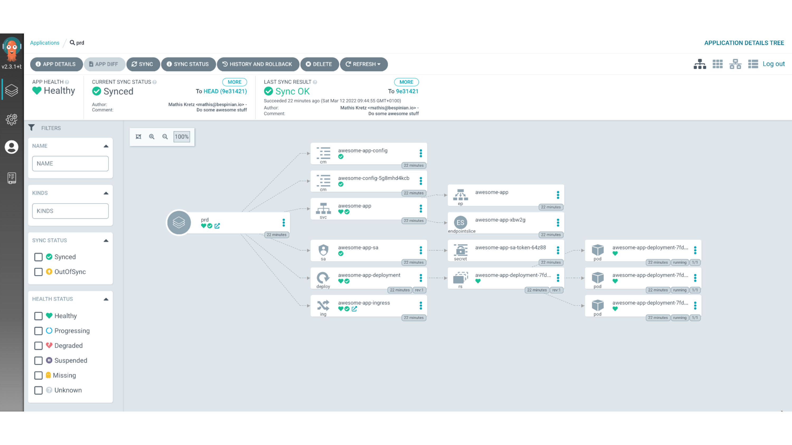
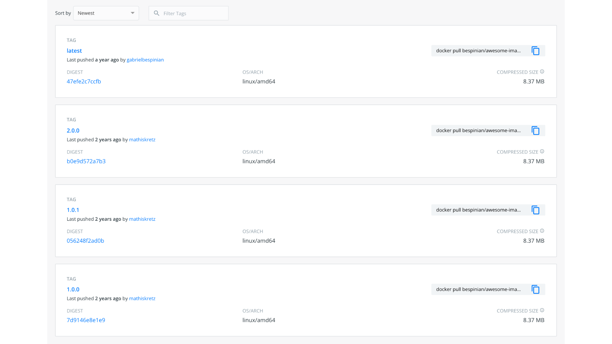
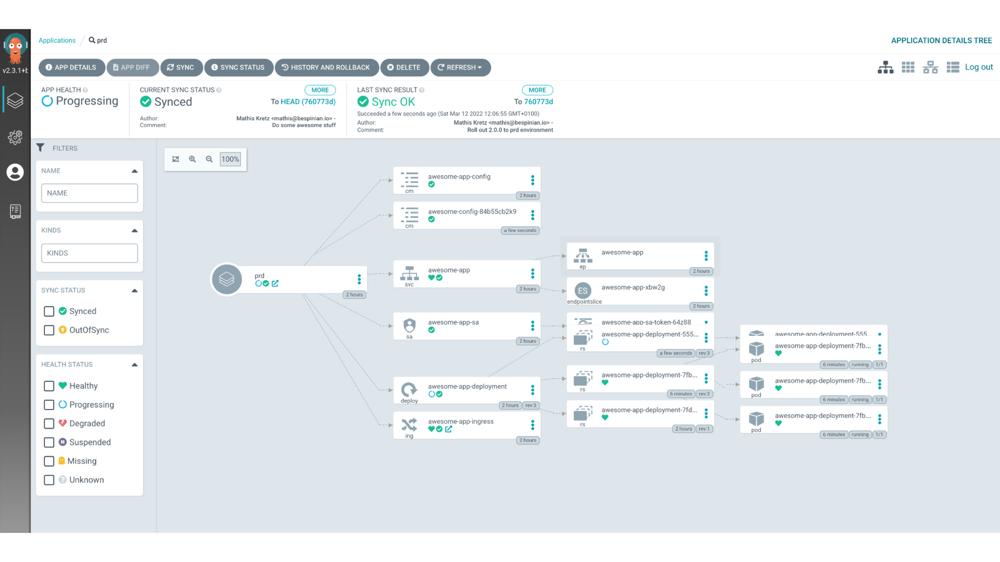
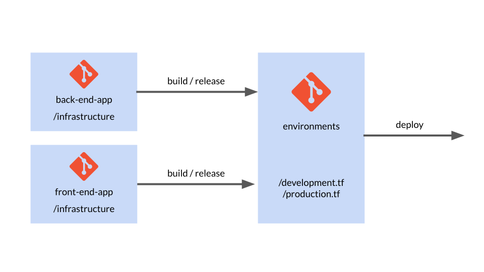

on
GitOps
This blog post is the third part of a three-part series adapted from a GitOps webinar series which we co-produced together with our friends at VSHN.
In this third part, we will show you how you can combine Git, which we introduced in part 1 with Infrastructure as Code, which we introduced in part 2. The combination of these two worlds will lead us to GitOps, where we will show you concepts and technologies which enable you to operate your infrastructure and applications entirely using Git repositories. We will proceed in two steps, first showing you how to do GitOps with applications and then how to extend the same principles to your entire infrastructure stack.
If you have questions, feel free to post them as comments on this blog post. If you would rather sit back and enjoy this part as a webinar, then you may head over to the recording on YouTube.
The Idea
Before we dive into how we perform GitOps for applications and infrastructure, let’s first consider the general ideas and assumptions behind GitOps.

Let’s first look at what problem GitOps aims to solve. Applications made up of many microservices are hard to keep track of when deployed in many environments. Environments can easily start to diverge and become snowflakes. GitOps proposes the following solution to this problem: we represent the desired state of our applications and environments declaratively as code, and version this declarative representation in Git. The declarative representation in Git is read by an automatic process, which applies it to the target environment based on certain events. The most important event is when a change happens in the Git repository holding the desired state. However, depending on how strict we want our setup to be, the automatic process could also react to manual changes to the applications or the environment’s infrastructure. In a strict setting, the manual process would override such changes with the desired state from Git. This means that changes to your applications and infrastructure are done exclusively through operations in Git. This in turn means that all the Git goodness that we showed you in Part 1 of this blog series can now be help you with those changes: you automatically get a history of all the changes and of who they were done by. You can pass proposed new changes to team members for a review. You can implement change approval processes using merge requests. Furthermore, your environments automatically stay documented without any extra effort.
Declarative Applications
So, in this first part, we want to focus on how you can do GitOps for your applications. Maybe you are part of a team which is building a complex microservice-based application, with another team providing the infrastructure platform to you. Then this first part will already contain all the concepts you need. On the other hand, maybe your team also provisions its own infrastructure. Then the second part on declarative infrastructure will show you how to govern your entire stack with GitOps.
For this first part, we have decided to use Kubernetes as the example infrastructure, which we will assume to be provided to us. There are of course many other examples which we could have used, like AWS Lambda or any other infrastructure platform given to you by a provider.
Build

Before we can deploy our microservice to an environment, we obviously need to build it. This is usually done with a continuous build pipeline, which runs based on code being pushed to our microservice’s repo. In this pipeline, we ideally lint our microservice’s code, we run unit tests on the code, and we test that our microservice behaves as expected in a mocked environment by also performing some component tests. Strictly speaking, these steps have nothing to do with GitOps, but they are critical for building our confidence that our microservice will behave the way we expect when it is deployed automatically later. So let’s assume that all of these steps have completed successfully in the pipeline.
At this point, the actual build step is executed. The build step packages our microservice into an artifact which contains all the things needed for our microservice to run. In our running example we are obviously thinking of a container image here, but there are other formats like VMs built with Packer or JAR-files or tarballs, depending on what your target platform looks like. The important thing is that the build pipeline produces one artifact which is independent of the potentially many target environments to which this artifact will be deployed. We want to build an artifact once and potentially deploy it many times.
Release

With our continuous build pipeline happily churning out artifacts based on commits of the source code, we need a second and separate step for marking certain instances of those artifacts as releases. This usually happens in a second pipeline which detects Git-tags being created in our microservice’s repository and which adds this tag to the metadata of the corresponding artifact. In our running example, this would mean tagging the container image with the version in the Git-tag.
The second step of the release pipeline uploads the tagged artifact to a central store, where this version of the artifact can later be referenced and pulled during deployment. Obviously again, in our running example we are thinking of an image registry here which will then be referenced from Kubernetes YAML-files when deploying our microservice together with other microservices. However, depending on your target platform you might be using a different type of store in this case, like an S3-bucket or a Maven repository. In any case, it will be something that can hold your built artifacts in different versions and serve a particular version on demand.
Deploy

So with our built and released artifacts nicely stored by version in a central store, we are now ready to do actual GitOps. This is where the topics of our previous two episodes come in handy. Namely, we put a pipeline in place which applies a declarative representation of our microservice architecture stored in a Git repository.
Whenever we update our declarative representation, say for example to make a config change, but also to introduce new versions of some microservices, we do this via the Git repository and our pipeline takes care of the deployment step. Because we are using a declarative approach, our pipeline does not need to know the procedural details of how to deploy our application. It just idempotently applies the representation and relies on the underlying technology to figure out the steps needed to reach the desired state.
In our example, the declarative representation are the Kubernetes YAML-files, containing deployments which reference container images. The pipeline itself is implemented in Argo CD because Argo is the most straightforward Kubernetes-native option. But again, depending on your target platform you would be using different technologies like for example GitLab-CI or Circle CI to run your pipeline.
Integration Tests

But what if we need to deploy to several environments? Maybe our team needs to perform integration tests of new versions of the microservice architecture before deploying the whole thing to the production environment. This is not a problem for GitOps. In this case, we would keep a declarative representation of our microservice architecture per target environment, and create one deployment pipeline for each target environment which monitors the corresponding representation. In our Kubernetes example, you will see how we use Kustomize to manage the differences between two environments without repeating ourselves, while at the same time staying declarative.
So coming back to the integration test scenario, in this case we would push the representation of the int environment to our Git repo, pinning the red microservice to a new release candidate version, say 2.1.1-rc and thus triggering its deployment. We would then perform our integration tests. Let’s assume they succeed. We would then re-tag our red microservice artifact to make it a proper release 2.1.1. Finally, we would push the representation of the prd environment to our Git repo, pinning the version of the red microservice to 2.1.1 and thus triggering its deployment.
Argo CD
After having discussed all the steps leading up to a deployment in GitOps, we are now ready to look at an example of how this works in practice. We are going to use a simple but very awesome application on Kubernetes, and we are going to see how it is deployed and managed using Argo CD. For the purpose of our example, we have Argo CD running on our Kubernetes cluster, managing two environments of the same application. We call them int and prd.

If we click on the prd environment, we can see the details of how our awesome application is deployed. It consists of one Kubernetes Deployment resource, which runs with multiple replicas to guarantee downtime-free rolling upgrades. It also defines an Ingress to make it reachable from outside the cluster.

So let’s look at how this setup is reflected as code in our sample repo on GitHub.
argocd-demo [main] l
.git
LICENSE
README.md
application-int.yml
application-prd.yml
env
ingress
resources
In our repo, we have two YAML files called application-int.yml and application-prd.yml. These are two custom resources which are applied to our cluster in the argocd namespace and which tell Argo CD that there are two application environments to manage. So let’s consider the resource for the int environment.
apiVersion: argoproj.io/v1alpha1
kind: Application
metadata:
name: int
namespace: argocd
spec:
project: default
source:
repoURL: https://github.com/bespinian/argocd-demo.git
targetRevision: HEAD
path: env/int
destination:
server: https://kubernetes.default.svc
namespace: awesome-gitops-int
syncPolicy:
automated:
prune: true
selfHeal: true
As you can see, this is a resource of kind Application, which is a custom resource definition introduced by Argo CD. Each Application has a source which specifies the URL of the Git repo where Argo CD expects to find the setup of the application. In our case, we have also specified a path attribute, which tells Argo CD which sub-path of the Git repo it needs to monitor for changes. Here we are pointing to the path env/int where Argo CD will find a Kustomization which defines the int environment of our application. We could also specify a targetRevision here, if we wanted to pin our deployment to a branch, a tag or to a specific commit. On the other hand, Argo CD expects a destination element which tells it where to deploy this particular application to. In our case, we are deploying to a namespace awesome-gitops-int on the local cluster. Furthermore, we have also specified a syncPolicy which basically defines how strict Argo CD runs its GitOps process. There we have set the prune option, which tells Argo CD to remove any resource which it finds in the namespace awesome-gitops-int but which does not have a representation in the Git repo. Additionally, we have specified the selfHeal option, which makes Argo CD override any manual changes to resources which have a representation in the Git repo with the state committed to that repo.
The prd environment of our application is defined in its own Application object, where only a few parameters differ:
apiVersion: argoproj.io/v1alpha1
kind: Application
metadata:
name: prd
# ...
spec:
source:
repoURL: https://github.com/bespinian/argocd-demo.git
# ...
path: env/prd
destination:
# ...
namespace: awesome-gitops-prd
syncPolicy:
# ...
Obviously, the name of our the productive Application is different. The Git repo is the same, but the path points to the Kustomization for the productive environment in this case. Furthermore, the destination namespace is the productive one in this case.
If we check the Kustomizations of our two environments, we see that the prd environment is currently running version 1.0.0 of our application, whereas the int environment is already on version 2.0.0.
apiVersion: kustomize.config.k8s.io/v1beta1
kind: Kustomization
bases:
- ../../resources
images:
- name: bespinian/awesome-image
newTag: 1.0.0
configMapGenerator:
- name: awesome-config
literals:
- appTitle=Something awesome!
- dbHost=db.bespinian.io
- appVersion=1.0.0
Indeed, if we have a look in Docker Hub, which is the artifact store we use for our release process in this example, we can see that there are versions 1.0.0 and 2.0.0 of the awesome-image which have been released by our build process.

So let’s consider how we upgrade our prd environment to version 2.0.0 using GitOps. In order to achieve this, we simply edit our declarative representation, which in this case is our Kustomization. Let’s assume we come up with the following new version.
apiVersion: kustomize.config.k8s.io/v1beta1
kind: Kustomization
bases:
- ../../resources
images:
- name: bespinian/awesome-image
newTag: 2.0.0
configMapGenerator:
- name: awesome-config
literals:
- appTitle=Something even more awesome!
- dbHost=db.bespinian.io
- appVersion=2.0.0
Our edits will lead to the following Git diff
--- a/env/prd/kustomization.yml
+++ b/env/prd/kustomization.yml
@@ -4,10 +4,10 @@ bases:
- ../../resources
images:
- name: bespinian/awesome-image
- newTag: 1.0.0
+ newTag: 2.0.0
configMapGenerator:
- name: awesome-config
literals:
- - appTitle=Something awesome!
+ - appTitle=Something even more awesome!
- dbHost=db.bespinian.io
- - appVersion=1.0.0
+ - appVersion=2.0.0
We can now commit these changes to our repo
argocd-demo [main] git add .
argocd-demo [main] git commit -m "Roll out 2.0.0 to prd environment"
argocd-demo [main] git push
When the Git push operation completes, Argo CD will detect our changes in the Git repo and apply them to the Kubernetes cluster, in this case using Kustomize. This can be observed in the UI of Argo CD by the fact that the prd environment is re-synched to our latest commit after a short while.

This completes the deployment cycle using Argo CD and brings us to the end of the first part of this blog post on GitOps for applications.
Declarative Infrastructure
If your team also manages the infrastructure layer, or you are a platform team, then GitOps goes further. Every so often, the distinction between applications and infrastructure is not clear-cut. One example of that are custom VM images that contain your applications. There, it’s not so clear whether the creation and hosting of these images should be done by the application or the infrastructure team. However, as you will see, most of the concepts and workflows are very similar between application and infrastructure code.
We have decided to use Terraform as the running example for declarative infrastructure. But there are of course many other examples like AWS CloudFormation, Ansible Tower etc.
Repo Structure

Obviously, there are many ways of how to structure your different components, teams and also Git repositories. One form we see a lot is to have the application-specific infrastructure with the applications themselves. So as you can see, we have an infrastructure directory in each application that contains the respective Terraform code for the application and all its dependencies like databases or message queues. By doing so, we can release the application as a whole, including its runtime and all its dependencies. All that’s separate is the configuration of the apps.
Since that is separate for each environment, we have a repo that consolidates each env. It instantiates each component and configures and parametrizes it for the respective environment. For example, here we have a production.tf file which contains all the components configured for prod. Then we have a separate development.tf which contains the same components, but maybe the servers are a bit less beefy, or I am using some debug options.
That’s also where the releasing and building of the apps and components comes in. For example, I can always use the latest versions of the back end and the front end apps in development. But for production, I may want to pin the versions. When I then create a new release, I can increment the respective version in the production.tf configuration, which in terms will trigger a new deployment into that environment.
Build
Let’s have a closer look at that.
Firstly, we want to look at the build step of your infrastructure modules. Just like for the application code, it makes sense to separate the build, the release, and the deployment phases. For Terraform, the term “build” might be a bit confusing because the code doesn’t actually need to be built. However, it still makes sense to validate and prepare your commits to be released. So maybe “prepare” would be a better name in this case.
$ terraform validate
$ terraform fmt -check
Since infrastructure code is mostly quite heavy to test and deploy, it is important to detect problems as early as possible. A comprehensive build pipeline that performs sanity checks on your code is therefore crucial. As with any pipeline, it makes sense to run the faster and more lightweight tasks first, to fail fast if something is wrong. Terraform, for example, offers a validity check feature that checks for syntax errors in your code and fails if there are any. Similar to that, we can quickly check if the code is formatted correctly according to the Terraform community best practices. Fortunately, Terraform offers a built-in command called terraform fmt (probably borrowed from go fmt) which has a check flag. This is an effortless way of making sure our code is easy to read and understand.
$ tflint && tfsec
The next step after a simple sanity check is to perform some linting. Popular tools are tflint and tfsec as introduced in Part 2 of this blog series. tflint is a general linter, whereas tfsec focuses on security issues, as the name implies. Both can be customized and can bring great value by helping you and your team follow best practices around Terraform and detecting potential issues early on.
$ make test
The last step that we can do before actually releasing new versions of our infrastructure modules is to run some isolated tests. Terratest is a great tool to perform such tests. It helps you to instantiate any module in isolation, run tests on it like making HTTP requests or checking whether certain parameters have been set correctly. Then it tears down the whole deployment again.
In the case of Terraform, uploading our build to an artifact store is redundant, as the Git repository and its tags represent the module.
Release
$ git tag v1.0.0-rc1
Releasing your infrastructure modules works in a very similar way as you would do it for applications. Each module is released individually. This happens, for example, by adding a git tag that specifies a commit that we would like to release as a release candidate version.
$ make integration-test
Our automation pipeline then picks that up and runs a suite of integration tests on our infrastructure, including the newly created release candidate. This can happen by using Terratest which can instantiate our whole environment separately and run a couple of smoke tests on that ephemeral environment.
$ git tag v1.0.0
As soon as we are happy, we then create an integration-tested release by adding another Git tag without the rc suffix. This marks the final release which, in Terraform’s case, doesn’t have to be uploaded anywhere because the repository itself contains the artifact which is just our infrastructure definitions at a specific commit. Now, we are ready to deploy the newly released infrastructure module.
Deploy
Deploying happens, as mentioned above, from a central repository which keeps track of which version of which module is deployed where. So, the deployment gets triggered by us changing the version number of a specific module, for example in the production.tf file. When we then commit and push that change, the deployment pipeline will pick that up and make the necessary changes via Terraform in the respective environment.
Example
Let’s have a look at an example to see how all of this works in practice. Assume we have an application called demo-app which is split up into three git repositories as follows:
/demo-app/
+ -- frontend
+ -- backend
+ -- environments
Furthermore, if we consider the structure of the backend repo, we see that it is just a normal Node.js application which contains an infrastructure subfolder. This subfolder contains two Terraform modules called back_end and db. The back_end module instantiates the complete infrastructure which the backend needs to run, in this case an AWS Lambda function and a database among other things.
/demo-app/backend/
> -- .github/
v -- infrastructure/modules/
v -- back_end/
api_gateway.tf
db.tf
dns.tf
function.tf
main.tf
networking.tf
tls_certificate.tf
variables.tf
v -- db/
+ -- db.tf
+ -- firewalling.tf
+ -- main.tf
+ -- networking.tf
+ -- outputs.tf
+ -- variables.tf
> -- src/
.env
.eslintrc.json
.gitignore
package-lock.json
package.json
README.md
The db module contains all the infrastructure needed for hosting the database specifically. It is instantiated in the back_end module by the file db.tf which looks like this:
module "db" {
source = "../db"
environment = var.environment
resource_suffix = var.resource_suffix
}
Using this mechanism, we can separate blocks of infrastructure from each other, and parametrize each one of them via clear interfaces of Terraform inputs and outputs.
Our application will be rolled out to various environments. That is what the environments repo is for. It contains Terraform files which define the development environment, prefixed with dev_ and Terraform files which define the productive environment, prefixed with prod_. Furthermore, the repo also contains some global files. These define resources which are shared across all environments, like a common monitoring stack, for example.
/demo-app/environments/
> -- .github/
> -- .terraform/
> -- modules/
> -- state/
.gitignore
.terraform.lck.hcl
dev_back_end.tf
dev_dns.tf
dev_front_end.tf
global_artifacts.tf
global_continous_deployment.tf
global_monitoring.tf
main.tf
Makefile
prod_back_end.tf
prod_dns.tf
prod_front_end.tf
README.md
secrets.auto.tfvars
variables.tf
Let’s look at the file dev_back_end.tf:
module "dev_back_end" {
source = "../backend/infrastructure/modules/back_end"
base_domain = aws_route53_zone.dev.name
db_url = module.dev_db.db_url
db_vpc_id = module.dev_db.vpc_id
db_client_security_group_id = module.dev_db.db_client_security_group_id
db_vpc_private_subnet_ips = module.dev_db.db_vpc_private_subnet_ips
dfp_api_key = var.dfp_api_key
alarms_topic_arn = module.monitoring.alarms_topic_arn
environment = local.dev_environment
resource_suffix = local.dev_resource_suffix
}
As you can see, the development environment is being initialized with dev-specific values and the source for the module is the latest commit of the back_end module. The latter is because we want the development environment to always have the latest state of the infrastructure. This is different, when we consider the analogous module prod_back_end.tf for the production environment:
module "dev_back_end" {
source = "../backend/infrastructure/modules/back_end?ref=v2.0.0"
base_domain = aws_route53_zone.main.name
db_url = module.db.db_url
db_vpc_id = module.db.vpc_id
db_client_security_group_id = module.db.db_client_security_group_id
db_vpc_private_subnet_ips = module.db.db_vpc_private_subnet_ips
dfp_api_key = var.dfp_api_key
alarms_topic_arn = module.monitoring.alarms_topic_arn
environment = local.environment
}
In this case, we are referencing a specific version of the back_end module because we want our productive environment to be pinned to a certain tested state. If we look at the commit history of the back_end module, we can see that the version v2.0.0 corresponds to a git tag there and that there have been more recent commits to that module in the meantime.
commit 68e85d80a90a905d44554fedfcc621b65375c57d (HEAD -> main, origin/main)
Author: Lena Fuhrimann <lena.fuhrimann@users.noreply.github.com>
Date: Tue May 17 14:49:46 2022 +0200
Add more awesomeness
commit cf3275a16174230a906bd536c242ee0b281b81b5
Author: Lena Fuhrimann <lena.fuhrimann@users.noreply.github.com>
Date: Tue May 17 14:47:52 2022 +0200
Fix a nasty bug
commit 8c64e3382973a93621fdac5dd67a9080eb43b4ef (tag: v2.0.0)
Author: Lena Fuhrimann <lena.fuhrimann@users.noreply.github.com>
Date: Tue May 17 14:33:02 2022 +0200
Deploy a stable state
Finally, if we look at the frontend repo of our example app, we see that it is just a plain singe-page application which does not contain an infrastructure folder:
/demo-app/frontend/
> -- .github/
> -- public/
> -- src/
.env
.gitignore
package-lock.json
package.json
README.md
This is because single-page applications have a very generic way of being deployed, and we can thus use an existing third-party Terraform module for this. We can see how this is done in the file dev_front_end.tf:
module "dev_front_end" {
source = "github.com/cloudlena/terraform-spa?ref=1.0.2"
providers = {
aws.us_east = aws.us_east
}
service_name = "cp_front_end"
domain = aws_route53_zone.dev.name
environment = local.dev_environment
resource_suffix = local.dev_resource_suffix
}
As you can see, we can reference any third-party module which is hosted on GitHub as the module’s source.
Advanced Concepts
GitOps itself is a very intriguing concept that can bring great value and stability to your projects. However, there are some even more advanced concepts that we would like to explore a bit at this point to give you some ideas of what you can do once you’ve achieved stable GitOps workflows.
True Continuous Deployment
Every commit gets deployed automatically
So far, we have only talked about deploying specifically tagged or otherwise marked releases. However, there is another interesting concept around GitOps, which is called “Continuous Deployment”. True continuous deployment means that every commit to a branch is directly deployed into one or multiple environments. Yes, sometimes even productive ones. For example, my team could have a single main branch and all changes to it go directly into production. So, there’s no specific versioning, tagging or releasing. My team and I are confident that any change we make is safe to go to prod.
Importance of testing
Obviously, it takes either a great ego or some serious testing coverage to get to the confidence level of releasing everything into prod. Good test coverage on a unit, an integration and an end-to-end level is crucial to releasing often.
Requires feature flags and a rigid Git model
Another important point to consider is that we might have features which are on our main branch but which we don’t want our end users to see yet. For that, feature flags can be helpful. In the simplest case, this means that we have an if statement in our code that checks if a specific feature should be enabled in that environment and only displays the new feature if that flag is enabled. By doing so, we can control the features and their availability in different environments independently of our code releases.
People mostly do continuous deployment in non-prod environments
At this time, many people do true continuous deployment in non-productive environments. It takes a lot of maturity and courage to move this process to productive environments, but we can only encourage you to strive to do so.
ChatOps
Another fun concept and buzzword is “ChatOps”. It means that we can trigger certain steps of our automation pipelines by using our normal communication tools. So, for example, we could have a Slack or Rocket Chat instance that we also use for our usual team communication. In there, we could have a “deployment” channel, where people simply have to type “Deploy production” as a chat message. Our automation server listens on that channel for certain messages and, as soon as they get posted, does its thing.
This is not as thoroughly automated as pure GitOps because there’s the manual step of writing a chat message. However, a combination of GitOps and ChatOps can be interesting. For example, the deployment into development and staging environments happens fully automated via GitOps and there’s no manual user interaction needed. For the deployment into production, however, we want to be a bit more cautious and only trigger the deployment after we’ve done thorough manual testing. This means that we can do this testing, and only after everybody is happy, we trigger the deployment via chat message.
Security
Audit Trail
GitOps brings great benefits in terms of security. By tracking all the changes to your applications but also your infrastructure in Git, you get a clear audit trail of what was done when by whom. To get this benefit, it is crucial to only accept signed commits to ensure that the person who claims to have made a commit actually did. This can be done via GPG and is supported by most Git server providers like GitHub.
Linting and Pull Requests
Another benefit in terms of security is that you get to lint and code review all of your code and therefore ensure that you follow best practices and don’t have any security holes that can be detected easily by static code analysis or by your colleagues looking over the code. All changes go through the team and are rolled out in a structured way.
Clear and Concise Overview of Code
Furthermore, GitOps always gives you an up-to-date summary of what is deployed where and how your infrastructure and applications are configured. This is great for manual security audits and simply to review your code as a team from time to time.
Thanks!
This brings us to the end of this three part blog series. We highly appreciate your interest and are excited for your comments and questions.
As a last important takeaway, please be aware that different teams might be at different maturity levels. Usually, application teams are rather quick at adopting such deployment and lifecycle strategies. So, it’s possible that your apps are already deployed using GitOps, but your infrastructure is still maintained traditionally, for example using a GUI and clicking around. This gap can be dangerous because the infrastructure might not be able to keep up with the fast pace of change GitOps allows the application teams to follow. Therefore, it is important to be aware of this gap and communicate clearly among the different teams and components that make up your environments.